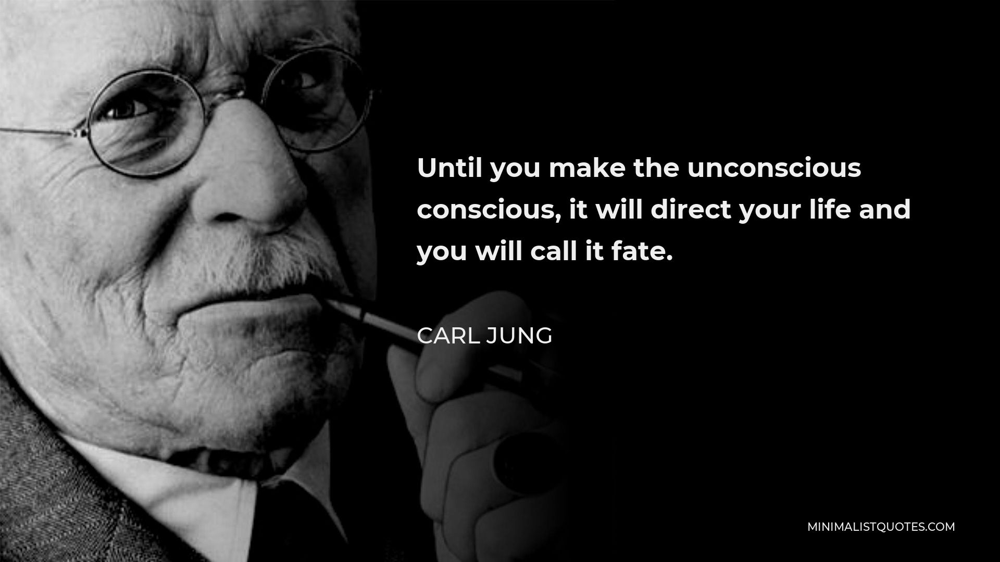

"עד שלא תהפוך את התת-מודע למודע, הוא ינהל את חייך ואתה תקרא לזה גורל." – קרל יונג
פורסם במקור ב LinkedIn
"עד שלא תהפוך את התת-מודע למודע, הוא ינהל את חייך ואתה תקרא לזה גורל." – קרל יונג
ישבתי אצל היועצת בבית הספר של הבן שלי.
בזמן השיחה העיניים שלי נדדו לשלט קטן על הקיר.
המשפט בשלט תפס אותי.
קראתי אותו פעם אחת.
ואז שוב.
כמה פעמים אנשים מוצאים את עצמם חוזרים על אותם דפוסים?
אותן מערכות יחסים. אותן טעויות. אותן תחושות תסכול.
וכל פעם המחשבה היא שזה פשוט "גורל".
אבל האמת היא שזה לא גורל –
זה הרגלים, פחדים ואמונות שהתקבעו כל כך עמוק, שהם כבר שקופים לנו.
הכוח של מודעות עצמית -
במאמרים רבים שמצטטים את יונג, חוזר המסר של חשיבות המודעות העצמית.
ככל שאדם מכיר טוב יותר את המניעים הפנימיים שלו, כך יש לו יותר חופש לשנות את הדרך שבה הוא חי.
רבים מאיתנו פועלים מתוך אוטומטים – אמונות שנצרבו בנו בילדות, דפוסים שראינו בסביבה שלנו, פחדים שלא שאלנו מאיפה הגיעו.
אבל כשעוצרים ושואלים למה אני מגיב ככה? למה אני חוזר על אותה טעות? שם נוצרת הזדמנות אמיתית לשינוי.
זה כמו להיות על במת התיאטרון של החיים, אבל במקום להיות השחקן שמופעל לפי התסריט - להפוך לבמאי, לזה שמחליט איך הסיפור יתפתח.
זה מביא אותי גם לתיאוריה בשם "הצל של יונג" - החלק שאנחנו מדחיקים
יונג דיבר הרבה על ה"צל" - אותם חלקים באישיות שלנו שאנחנו לא אוהבים, ולכן דוחקים הצידה. אבל הבעיה היא שהחלקים האלה לא נעלמים - הם ממשיכים לפעול מאחורי הקלעים.
למשל, אדם שרגיל להימנע מקונפליקטים יחשוב שהוא פשוט "טיפוס נוח".
אבל האמת? אולי עמוק בפנים יש פחד לא מודע שמישהו יכעס עליו, פחד ששורשיו נמצאים הרבה יותר רחוק ממה שהוא חושב.
ברגע שמזהים את ה"צל" – אותו צד מודחק שמנהל אותנו בלי שנרגיש – אפשר להתחיל לעבוד איתו במקום להילחם בו.
אפשר לשאול: מה הדבר שאני מסרב להכיר בעצמי? איך הוא משפיע עליי? איך אני יכול לשלב אותו בצורה בריאה יותר?
זה לא גורל - זו בחירה מודעת
הדבר המדהים הוא שברגע שמשהו הופך למודע, הוא מאבד את הכוח הלא-מודע שלו עלינו. הוא כבר לא שולט בנו – אנחנו שולטים בו.
📌 זה נכון לכל תחום בחיים:
💠 אדם שנמשך תמיד לאותם טיפוסי אנשים שלא מתאימים לו – אולי לא שם לב לדפוס שמתניע את זה.
💠 מי שמתקשה לקחת החלטות גדולות – אולי נושא איתו פחד שלא נבדק.
💠 מי שכל פעם מגיע לאותה נקודת תקיעות – אולי משחק לפי חוקים שכבר לא משרתים אותו.
אבל מה שבאמת מדהים?
ברגע שדפוס הופך למודע - הוא מאבד מהכוח שלו.
אף אחד מאיתנו לא "חף מפשע" -
לכולנו יש דפוסים שמנהלים אותנו בלי שנשים לב
אבל השאלה האמיתית היא: כמה אנחנו מוכנים לראות אותם?
אז איזה "גורל" הוא בעצם רק דפוס שמחכה שתהפכו אותו למודע?
בכל צומת דרכים שאני נמצא בה, אני משקיע הרבה מאמץ בלהביא למודעות שלי את הדרך שהובילה אותי לאותה צומת, ובניתוח החששות וההזדמנויות שאותה צומת מביאה עמה. אני יודע שגם אחרי עבודה קשה כזו בסופו של יום העתיד יגריל לי תוצאה לא צפויה, אבל לפחות אני יודע שהבחירה שלי היא מודעת ומבוססת על ההיכרות שלי עם עצמי, ועל החולשות והחוזקות שלי.
חומר למחשבה. 🚀
